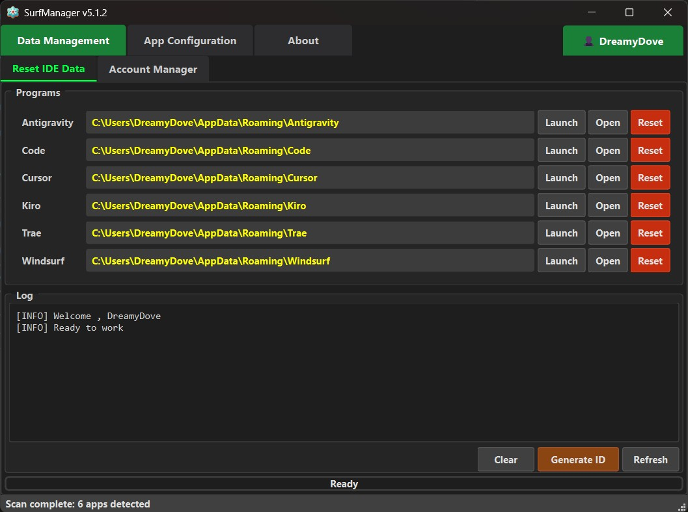
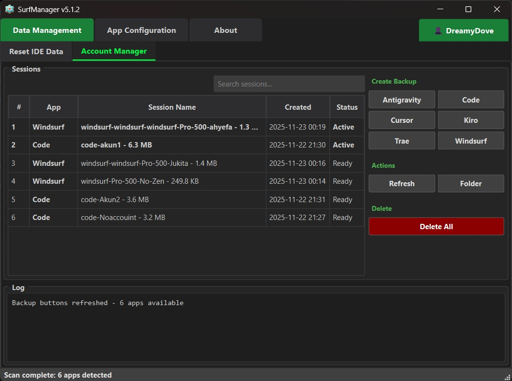
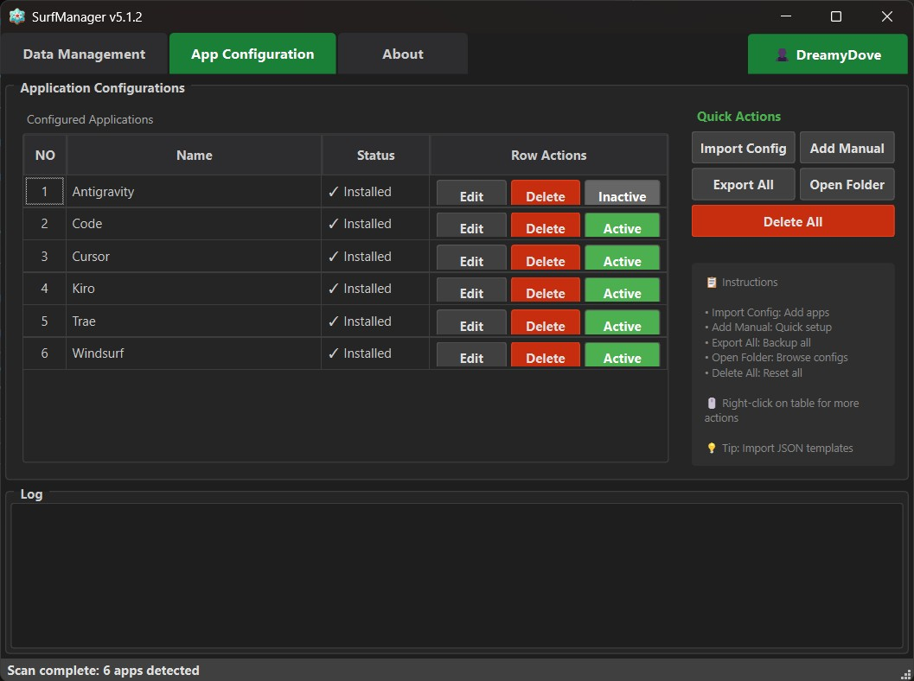
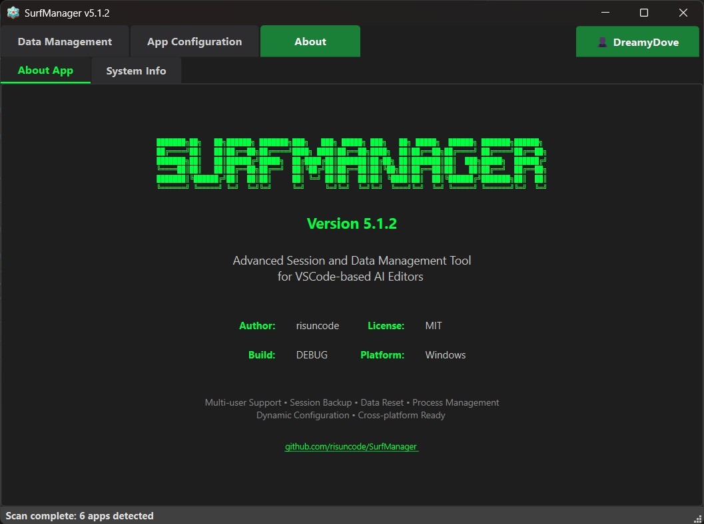

IDE Session Management Tool
Effortlessly manage your development environment

SurfManager is a powerful tool designed to help developers effortlessly manage session data for their IDE applications. Whether you're backing up, restoring, or seamlessly switching between different accounts and workspaces, SurfManager provides a clean, cross-platform solution to keep your development workflow smooth and efficient.
Built with Python and featuring an intuitive interface, SurfManager supports multiple IDE platforms including VS Code, Cursor, and Windsurf. The tool automatically detects running applications, provides intelligent caching for lightning-fast performance, and offers batch operations to handle multiple sessions at once.
✓ Cur**r - AI-powered code editor
✓ Win**urf - Advanced development environment
✓ Visual Studio Code - Microsoft's popular editor
✓ All VSCode fork based apps - Unlimited compatibility
+ Easily add custom applications via Manual Add Button in App configuration
Save your current workspace state and restore it later. Perfect for testing different configurations.
Switch between different development setups instantly. Maintain separate configurations for different projects.
Reset your application to factory settings while keeping backups safe. Troubleshoot issues effectively.
Manage multiple user accounts and sessions. Switch between different authentication states seamlessly.

Startup in ~1 second. Operations executed instantly with intelligent caching and optimized performance.
Automatic backups before operations. Safe data handling with comprehensive error recovery system.
Dynamic JSON configuration. Add custom applications easily without touching source code.
→ Language: Python 3.8+
→ GUI Framework: PyQt6
→ Architecture: Modular & Cross-platform
→ Config Format: JSON
→ License: MIT Open Source
→ Binary Size: 34MB optimized
Windows 10/11 ✓ Full Support
Linux ⏳ Partial Support
macOS ⏳ Partial Support
Platform-specific adapters included
Effortlessly switch between different IDE configurations and user profiles. Create custom backup names, batch operations, and auto-backup before resets.
Seamlessly manage multiple user profiles and credentials across different IDEs. Perfect for developers working with multiple accounts or testing environments.
Real-time detection of running applications with intelligent caching for lightning-fast performance. Auto-close features for smooth operations.
Built with Python and PyQt6 for maximum compatibility. Dynamic JSON configuration allows adding custom applications without coding.
JSON-based configuration system with variable substitution and extensibility. Add new applications easily without touching source code.
Comprehensive safety measures with automatic backups, error recovery system, and detailed logging for all operations.
SurfManager main dashboard and control panel
Backup and restore session management
Account switching and profile management

Configuration and preferences panel
Get started with SurfManager and take control of your IDE sessions today!
We're here to help! Connect with us for support, bug reports, or feature requests.
Found an issue? Let us know!
Submit detailed reports via GitHub Issues for quick resolution.
Have ideas for improvements?
Share your suggestions and help shape the future of SurfManager.
Want to contribute?
Fork the repository and submit pull requests to help improve SurfManager.